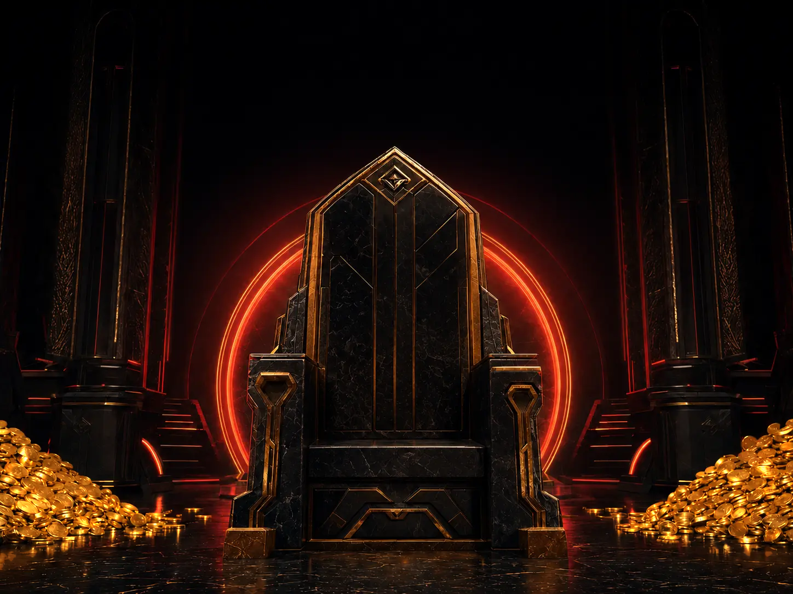

Dari gambarmu
Pilihan siap pakai
Warna sendiri
Semua fitur
Pilih alat yang ingin kamu gunakan. Semua proses berjalan langsung di perangkatmu.
Data publik akun
Masukkan UID untuk melihat informasi publik yang tersedia pada profil Free Fire.
Masukkan Poin Prime untuk melihat perkiraan jumlah top up akun.
Hasil ini hanya perkiraan, bukan tagihan asli. Harga setiap toko dapat berbeda.
Alat ini hanya menampilkan informasi publik yang juga dapat dilihat dari profil dalam game. Kata sandi, e-mail, dan nomor telepon tidak pernah dibaca. Jika pencarian gagal, layanan sumber data mungkin sedang tidak tersedia.
Rekomendasi awal
Jawab empat pertanyaan untuk mendapatkan rekomendasi sensitivitas sesuai perangkat dan gaya bermainmu.
Hasil
Gunakan angka ini sebagai titik awal, lalu sesuaikan sedikit demi sedikit di ruang latihan.
—
Catat & hitung otomatis
Catat top up, spin, dan pembelian lainnya. Semua data tersimpan di perangkatmu.
Ringkasan
Buat & salin
Ketik nama, pilih gaya huruf dan hiasannya, lalu salin hasilnya.
Koleksi simbol
Ketuk simbol untuk langsung menyalinnya.
Gaya Tebal, Miring, Mesin tik, dan Dikotaki memakai huruf khusus yang tidak semua game mau menerima. Kalau Free Fire menolak namanya, coba Kecil kapital — itu yang paling sering berhasil.
Free Fire membatasi panjang nama sekitar 12 karakter, dan simbol ikut dihitung. Kalau nama ditolak, biasanya ada satu simbol yang tidak didukung — coba ganti satu per satu.
Kelompok "Khusus iPhone & Mac". Logo Apple bukan huruf Unicode resmi — Apple menaruhnya di wilayah kode pribadi. Artinya simbol itu hanya tampil di iPhone dan Mac. Kalau kamu membuka halaman ini dari Android, kotak-kotak di kelompok itu memang terlihat kosong, dan itu bukan kerusakan. Di dalam Free Fire pun kemungkinan besar tidak tampil kecuali lawanmu memakai iPhone. Pakai kalau kamu sadar risikonya.
Spasi tak terlihat. Tiga karakter di kelompok terakhir dipakai untuk membuat nama berspasi atau nama kosong. Ini bekerja di banyak kasus, tapi Garena sesekali menutup celahnya — dan nama yang tidak terbaca bikin temanmu susah menambahkanmu sebagai teman.
Langkah 1
Pilih screenshot lobi dengan papan nama yang masih kosong. Gambar diproses langsung di perangkatmu.
Belum ada gambar yang dipilih.
Langkah 2
Tulis nama, pilih warna, lalu atur posisinya pada gambar.
Tarik titik kuningnya untuk mengikuti bentuk karakter. Titik kecil di tengah garis kalau ditarik jadi titik baru. Ketuk dua kali sebuah titik untuk menghapusnya. Geser bagian dalam bentuknya untuk memindahkan semuanya. Kalau ada celah yang tidak terjangkau, pakai Tambah kotak, lalu ketuk sebuah kotak untuk memilihnya. Di dalam bentuk tetap tajam, di luarnya jadi blur. Papan namanya otomatis ikut tajam.
Hasilnya tersimpan sebagai gambar biasa. Ini alat edit gambar, bukan pengubah data akun — skin di gambar tidak jadi milikmu di dalam game.
Langkah 1
Pilih senjata untuk melihat skin yang tersedia dan membandingkan efeknya.
Langkah 2
Peringkat
Skin dengan nilai tertinggi ditampilkan lebih dahulu. Ketuk skin untuk membandingkannya.
Garena tidak pernah mengumumkan angka bonus skin; di game yang terlihat cuma panah naik-turun. Nilai di sini dihitung sendiri:
Di SMG jarak dekat, rate of fire dan damage berbobot paling besar, sementara range hampir tidak berpengaruh. Di sniper kebalikannya: damage, akurasi, dan range yang menentukan. Karena itu skin penambah range bernilai tinggi di sniper tapi rendah di MP40. Setiap nilai disertai rinciannya, jadi bobotnya bisa kamu nilai sendiri.
Daftar ini hanya berisi skin yang efeknya tercatat di sumber yang bisa dilacak. Sisanya sengaja tidak dimasukkan daripada ditebak.